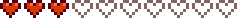

“...¿Has encontrando a otros yo, en las minas? Perdón si ellos fueron hostiles hacia ti. Ya ves, aprendimos a temer a los humanos... han habido muchos... encuentros no placenteros.”
Sábado: Un plato de comida aleatorio (elegido de un subconjunto de platos de comida) a un precio aleatorio de entre data-sort-value="50">50o- data-sort-value="500">500o. El Pan tiene una probabilidad de 2/51 de aparecer, los otros objetos tiene una probabilidad de 1/51 de aparecer.
Una fruta misteriosa que da poder a quien la consume. Su sabor es como un sueño... Una experiencia personal muy poderosa, pero difícil de explicar a los demás.
Krobus es una bestia de las sombras y, a pesar de no ser hostil, sigue refiriéndose a los otros monstruos como "sus amigos". Él vive en las cloacas y no es visto afuera interactuando con los otros aldeanos. A él no le agradan los enanos, indicando que una guerra de 1000 años entre los enanos y su gente acabó recientemente. Él cree que si los enanos supiesen su ubicación, ellos enviarían un asesino.
El Mago es consciente de su presencia e interviene para prevenir conflictos.
Es uno de los aldeanos candidato para el matrimonio, pero no te casas con él, se hace tu compañero de habitación, podrás regalarle un Colgante de fantasma del vacío, comprado al comerciante del desierto por 200 esencias sombrías. Se sustituirá el beso por un abrazo, no podrás tener hijos pero si tenías hijos con otra persona, se quedarán en tu casa.
Puedes darle a Krobus hasta dos regalos por semana (Más uno en su cumpleaños), que puede aumentar o disminuir su amistad contigo. Los regalos para su cumpleaños ( 1 Invierno) tendrán un efecto amplificado por 8; y mostrará un diálogo único.
Para los regalos amados, gustados o neutrales, Krobus dirá
“
“Oh, ¡un regalo para recordar el día en el que eclosioné del huevo! ¡Gracias!”
Para regalos disgustados u odiados, Krobus dirá
“
“Oh... ¿es esto a lo que llamáis «regalo de cumpleaños»? No entiendo a los humanos...”
Le encanta
“
“Es un regalo increíble. Para mi raza recibir algo así es todo un honor.”
Mayonesa sombría
“
“¡Esto huele delicioso! Comeré la mitad y usaré la otra mitad para hidratar mi cuerpo...”
Compendio de monstruos
“
“¡Hey Mira! Todos mis amigos están aquí. Espera un momento, ¿soy yo...?”
Almizcle de monstruo
“
“¿Un regalo de un perfume encantador? Oh, (Nombre)... Me estoy sonrojando, pero probablemente no lo notes...”
Té de fruta estelar
“
“¿Eso es té de fruta estelar? ¡Gracias! Una gota hace que mi habitación huela bien durante todo el día.”
Una de las estrellas del otoño, cultivada por sus semillas crujientes y su carne de sabor delicado. Además, su cáscara hueca puede tallarse para hacer decoraciones festivas.
Maravillas naturales: explorando nuestro exhuberante mundo
Wumbus
Le Encanta
Regaliz negro
Desagrada
Algodón de azúcar Galleta estrella Joja Cola Maíz de Joja Mousse de capuchino Palomitas de chocolate Piruleta Rodajas de manzana Rompemandíbulas Sandwich de helado Sorbete de fruta estelar
Le Gusta
Todo lo demas
Compañero de casa
Si el jugador no está casado, Krobus se mudará a la granja tres días después de aceptar un Colgante de fantasma del vacío. Al igual que los candidatos al matrimonio, agregará su propia habitación a la derecha del dormitorio. No establecerá un área en el espacio detrás de la granja.
Krobus sale de la granja solo en los días de lluvia, cuando se para en el porche delantero. Con 13 corazones, le dará al jugador una Fruta estelar, como un cónyuge, y puede poner Papel de Pared o cambiar el Suelo como un cónyuge.
Aunque la relación del jugador con Krobus es platónica, la mecánica del compañero de habitación del juego es casi idéntica a la mecánica del matrimonio, con las siguientes excepciones:
Besar se reemplaza con abrazos.
No se lleva a cabo ninguna ceremonia.
Krobus nunca se pondrá celoso si el jugador le da un regalo a un candidato a matrimonio.
En lugar de divorcio, Krobus puede ser desalojado gratis. Sin embargo, el jugador todavía necesita hacer esto a través del libro en la Mansión del alcalde. Después de que Krobus se muda, permanece en silencio con el jugador y rechazará los regalos.
Al igual que con un ex cónyuge, la Cabaña de la Bruja se puede usar para borrar los recuerdos que Krobus tiene del jugador.
No puedes tener ni adoptar hijos con Krobus. Sin embargo, él ayuda a criar a sus hijos existentes de matrimonios anteriores.
Krobus no hace las tareas del hogar como lo haría un cónyuge.
Eventos de corazon
Tres corazones

Despues de conseguir 3 corazones Krobus te enviara un mensaje al correo.
Jugador, no estoy seguro de cómo funciona este sistema de mensajes humanos, así que le pedí a Rasmodius que me ayudara a escribir esta carta.
Espero que estés bien .
Quería compartir esto con ustedes... son notas sobre cómo mi gente construye un elemento determinado.
-Krobus
Catorce corazones
Entra en La playa a las 20:00 y 01:00 en un dia que no llueva (8 pm y 1 am)
Detalles
Krobus esta sentado al final del muelle en La playa mirando como las Medusas lunares nadan cuando Un monstruo marino Aparece. El monstruo marino sube sus tentaculos, Y Krobus se sube para dar un paseo. Una burbuja de corazon aparece arriba de la cabeza de krobus, Indicando que disfrutó el viaje.
Citas
Detalles
Primera cita
“
“¿Un visitante? Esto es de lo más extraño...
Soy Krobus, comerciante de bienes raros y exóticos.”
“
“ Por favor, no te alarmes. Soy diferente a los demás. He pasado mucho tiempo observando a los humanos. Sé que te gusta ir de compras. ¿Te importaría ver mis productos?”
Regular
“
“...¿Has encontrando a otros yo, en las minas? Perdón si ellos fueron hostiles hacia ti. Ya ves, aprendimos a temer a los humanos... han habido muchos... encuentros no placenteros. No has... matado a ninguno de mis amigos, ¿verdad?”
“
“Encuentro cosas aquí y las vendo. ¿Quieres comprar algo?”
“
“Por favor, no le cuentes a nadie sobre mí. Los humanos tienden a destruir cosas que no pueden entender.”
“
“Soy demasiado sensible a la luz del sol para salir la mayoría de los días. Las condiciones aquí son perfectas. ¿Te importa comprar cualquier cosa?”
“
“Por favor, no te alarmes. Soy diferente a los demás. He pasado mucho tiempo observando a los humanos. Sé que te gusta ir de compras. ¿Te importaría ver mis productos?”
“
“¿De nuevo? Supongo que encaja en mi teoría del comportamiento humano.”
“
“Los viernes permanezco en silencio en señal de devoción a Yoba.”
“
“...Lo siento, todavía desconfío un poco de los humanos. Sin embargo, mi tienda todavía está abierta para ti.”
“
“No eres como los demás humanos, ¿verdad?”
Día lluvioso
“
“Ah, las alcantarillas fluyen rápidamente hoy. Se pondrá agradable y húmedo aquí... tal como a mí me gusta.”
+8 Corazones
“
“Me has abierto los ojos al mundo de los humanos. Soy consciente de que.”
“
“Recientemente terminó una guerra de 1000 años entre mi pueblo y los enanos. Todavía hay mucho resentimiento en ambos lados.”
15 de la estación, solo año 1
“
“Por favor mantenga mi ubicación en secreto. Si los enanos supieran de mí, seguramente enviarían un asesino.”
Después de recibir el colgante de Fantasma del vacío
“
“[Jugador]... Me temo que tendremos que mantener esto en secreto... Ni mi pueblo ni el tuyo aceptarían que vivamos juntos.”
“
“Sabes que seré una persona muy extraña con quien vivir, ¿verdad? No podré salir de casa...”
Compañero de cuarto
Días de interior
“
“Si pudiera ir a ayudarte, lo haría... pero haré lo mejor que pueda para mantener la casa en orden.”
“
“Soy feliz aquí, en la casa. Me gusta pasar todo mi tiempo en un buen lugar... No necesito "salir" como lo hacen los humanos. ¡Pero entiendo que es necesario! Por favor, no sientas que tienes que quedarte aquí conmigo.”
“
“Estoy considerando pasar el día hecho un ovillo y encajado en un rincón... ¿Qué? ¿Quieres decir que no haces eso?”
“
“Los viernes me gusta quedarme callado por respeto a Yoba. Espero que no te moleste.”
“
“Ojalá pudiera ayudarte en la granja, pero no puedo salir al sol...”
Dando un regalo
“
“Hice lo mejor que pude para hacer comida humana... Puedes comerla más tarde, no te preocupes...”
En su habitación lateral
“
“Somos tan diferentes físicamente que es un desafío vivir juntos, ¿no?
Espero que la humedad de aquí no te moleste. ¡Ambos tenemos que hacer concesiones para poder vivir juntos!”
Días al aire libre
“
“Me quedaré aquí afuera solo un rato, pero tenemos que tener cuidado... si alguien se acerca tendré que esconderme.!”
“
“¡Es raro que pueda salir!”
“
“¡Qué hermoso día!”
“
“Los espacios abiertos me ponen nervioso...”
“
“Por favor, continúa con tu día. Yo me quedaré aquí y cuidaré la casa.”
“
“Esperaré aquí un rato y veré si se me aparece algún bicho. ¡Aún no he desayunado!”
“
“En un día como este, puedo disfrutar del aire libre contigo. ¡Esto es realmente bonito! Sólo avísame si ves venir a alguien, así puedo esconderme.”
Noches de interior
“
“Hoy limpié todos los bichos de la casa... ¡Lo siento, no te guardé ninguno! *Beso*”
“
“Te sientes sólido... a veces desearía tener huesos...”
“
“A veces me pregunto si los humanos y las sombras realmente podrían coexistir alguna vez... Es una idea encantadora, pero ¿es realista? Eso espero...”
“
“A veces hago una pausa y pienso en todo lo que he aprendido de ti sobre los humanos... Ojalá todos mis compañeros de las sombras pudieran conocer este sentimiento.”
“
“Quiero ser un buen compañero de casa para ti, pero nunca sé si lo estoy haciendo bien... *gemido* Me cuesta entender la expresión humana. P... pero... ¿eres feliz viviendo conmigo? ¡Okey!”
“
“Hola, [Jugador]. Bienvenido a casa. ¡Parece que has estado trabajando duro ahí fuera!”
Días lluviosos
“
“¿Te gustan los días lluviosos tanto como a mí, [Jugador]?”
“
“Somos diferentes en muchos aspectos... pero está bien.”
“
“Me pregunto si el mago sabe sobre... ¿esto? Espero que pueda guardar un secreto.”
“
“Por más que intento ser civilizado, a veces tengo ganas de ser travieso... Dicen que es una condición de mi pueblo.”
“
“Ah, hoy se está más húmedo con la lluvia... me siento mucho más cómodo.”
Dando un regalo
“
“Buenos días, [Jugador]. Salí temprano y encontré esto para ti. Espero que no sea demasiado extraño.”
Noches lluviosas
“
“En noches como ésta, quienes miran por las ventanas a veces ven figuras oscuras. Piensan... que podría haber sido yo.”
“
“Si las otras personas en la sombra supieran sobre nuestro arreglo de vivienda, ellos... me 'castigarían'. La mayoría de ellos desprecia a los humanos, ¿sabes?”
“
“¡Estás empapado y frío! ¿No es eso peligroso para tu especie?”
“
“Ya cené, pero no era algo que pudieras comer... lo siento.”
“
“Desde que dejé a mi gente, he estado buscando un nuevo hogar... ahora pertenezco a algún lugar. Eso significa todo para mí.”
“
“Se dice que mi gente vino aquí hace mucho tiempo, cuando una gran catástrofe permitió que los espíritus del vacío cruzaran al plano físico.”
“
“El sonido de la lluvia me recuerda a las alcantarillas... es reconfortante. Las alcantarillas eran mi refugio... Allí me sentía seguro. Pero no te preocupes... Yo también siento lo mismo por mi nuevo hogar.”
Corazones altos
“
“Siento una sensación en mi cuerpo... ¿es... 'amor platónico'? ... Oh, espera... Sólo estoy mudando de piel.”
“
“He aprendido a superar mis prejuicios contra los humanos... pero los enanos todavía me disgustan.”
“
“Empezaste a mordisquearme durante la noche y a murmurar sobre 'lamer negro o ish'... ¿qué quisiste decir con eso?”
“
“Estamos progresando y tengo muchas esperanzas.”
“
“Estaba admirando esta casa hermosa... qué lugar tan maravilloso.”
Corazones neutros
“
“Yo nunca envejeceré, pero tú sí. A veces me pone triste... pero está bien.”
“
“Do you think your Grandpa would approve of a monster living in his house?”
“
“Do you think we could get in trouble for living together?”
“
“Hay tanta luz aquí... Podría cerrar los ojos durante unas horas.”
“
“No puedo salir, solo puedo comer ciertos alimentos, necesito la temperatura de cierta manera... Espero que no sea mucha molestia vivir conmigo, [Player].”
“
“Welwick dice que hoy estoy maldito.”
“
“Te contaré un secreto... En realidad no duermo, sólo me quedo ahí tumbado con los ojos cerrados...”
“
“Eres extraño para querer vivir con una criatura como yo.”
“
“¡Voy a limpiar la casa todo el día! Es divertido.”
“
“Me pregunto si viviremos aquí toda nuestra vida. Probablemente mudarme sería demasiado peligroso para mí.”
Corazones bajos
“
“*sigh*... Quizás debería haberme quedado con los de mi propia especie.”
“
“...¿Te sigo gustando?”
“
“¿Sigues siendo feliz viviendo conmigo?”
“
“Creo que serías más feliz viviendo con otro humano...”
“
“He detectado un cambio en tu comportamiento... ¿qué significa? *gemido*”
“
“Sólo tienes una vida corta para vivir... ¿estás seguro de que quieres pasarla con una criatura horrible como yo?”
“
“Quizás una relación como esta esté destinada al fracaso...”
“
“Pareces infeliz últimamente...”
“
“Echo de menos las cloacas.”
Viviendo con un hijo
“
“No estoy seguro de cómo, pero Yoba ha bendecido esta casa con un 'niño'...”
Viviendo con dos hijos
“
“No te preocupes... ya le hice a <nombre del niño> y a [niño] una tortilla de huevo sombrío.”
“
“Me preocupa el futuro de los niños... Pero confío en que Yoba tenga un plan para ellos.”
“
“Esta casa ha sido bendecida con dos hijos, ahora... ¿Eso significa que Yoba aprueba nuestra forma de vivir poco convencional?”
Primavera
“
“IAhora es "primavera", ¿no? Puedo oler el aroma picante del rábano silvestre.”
Primavera 1
“
“¿Cuál es tu plan para el nuevo año, [Player]?”
El día antes de la danza floral
“
“¡Deberías ir mañana a la danza floral! No te preocupes por mí.”
Verano
“
“A esta época del año la llamas 'verano', ¿verdad? El calor y la humedad son agradables, pero desearía que no hiciera tanto sol.”
Verano 1
“
“Me quemo muy fácilmente con el sol, así que debo tener cuidado en esta época del año.”
Verano 8
“
“Mmm... ¿qué es ese olor tan encantador? Debes haber estado sudando toda la noche...”
Verano 15
“
“Es verano... eso significa que la casa está llena de moscas. No te preocupes, yo me ocuparé de ellos. ¡Es una buena fuente de proteína!”
Otoño
“
“Últimamente hace un poco más de frío y huele a humedad. A esta época del año la llamas "otoño", ¿verdad?”
Otoño 8
“
“No tengo ganas de hacer nada hoy.”
El día antes de la Feria
“
“¿Has decidido qué vas a usar mañana para tu exhibición?”
Otoño 24
“
“Si me presentara al festival de la Víspera de los Espíritu me pondrían en una jaula...”
Invierno
“
“La oscuridad en esta época del año es muy relajante. ¡Si tan solo hiciera más calor!”
Invierno 28
“
“Gracias por dejarme quedarme aquí, [Jugador]. ¡Espero con ansias otro gran año!”
Después del desalojo
“
“...”
Después de encontrarte exhausto en las Minas
“
“¡Estuviste fuera tanto tiempo que comencé a preocuparme por ti! Empecé a llorar cuando vi tu cuerpo sin vida...”
El mago me ha pedido que recupere la tinta mágica que hay en casa de su exmujer... Pero para poder entrar necesitaré un talismán oscuro. Entra en la cloaca y pide información a Krobus sobre el talismán oscuro.
Krobus también indica que no puede salir de las cloacas durante el día. Sin embargo, esto significa que puede salir por las noches y nadie lo ha visto.
Krobus técnicamente puede ser considerado como el único monstruo "amigable" en el juego.
Krobus indica que guarda silencio los viernes como muestra de respeto hacia Yoba.
Errores
En la versión 1.4, es posible volver a comprar los objetos limitados que Krobus tiene a la venta. Para ello, el jugador tendrá que salir y voler a entrar en la interfaz de venta.

 50o-
50o-